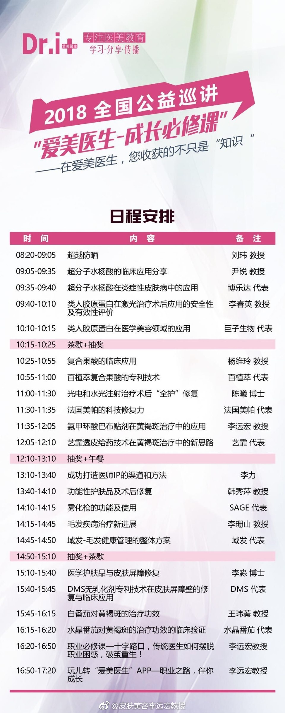
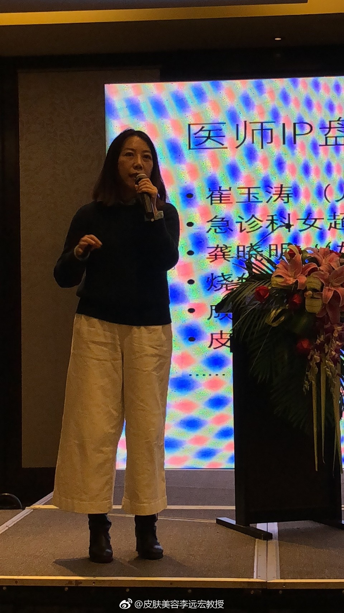
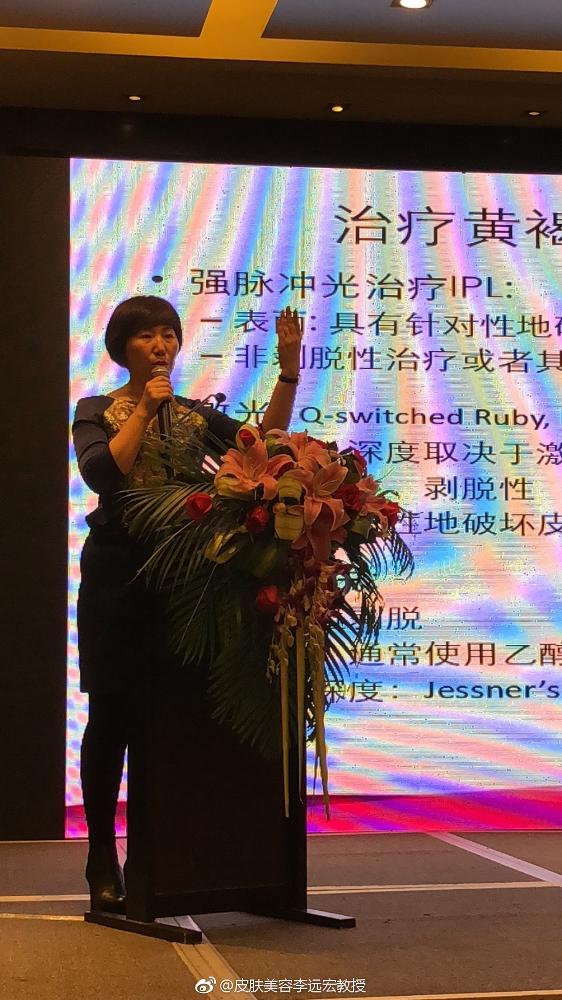
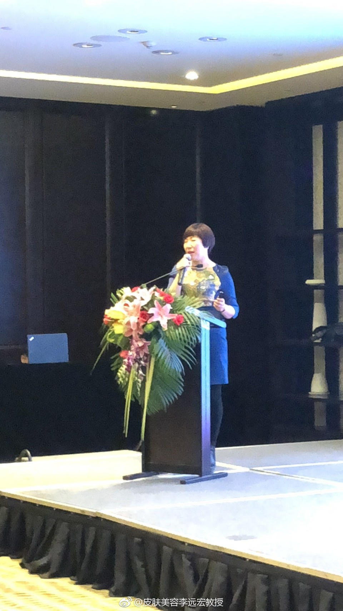
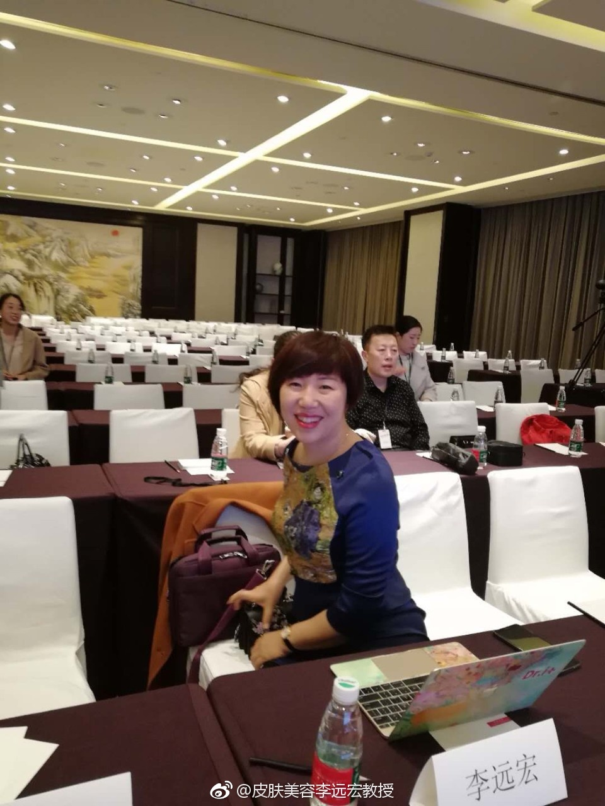
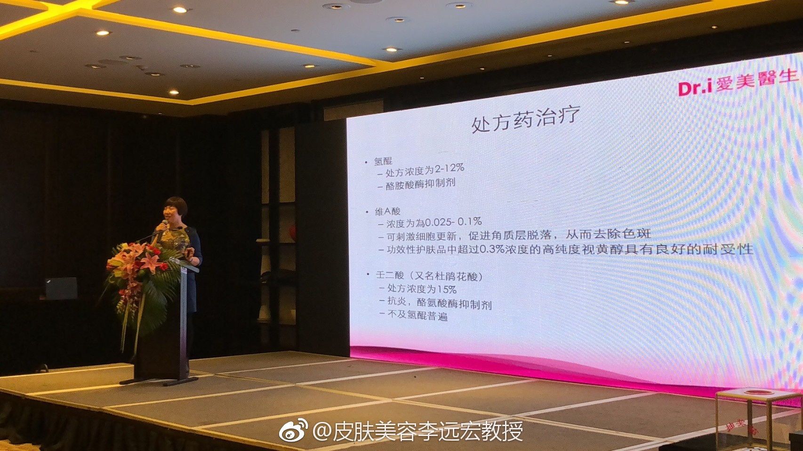
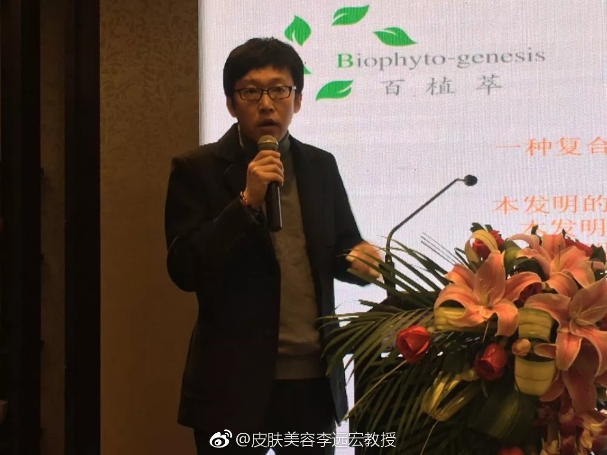
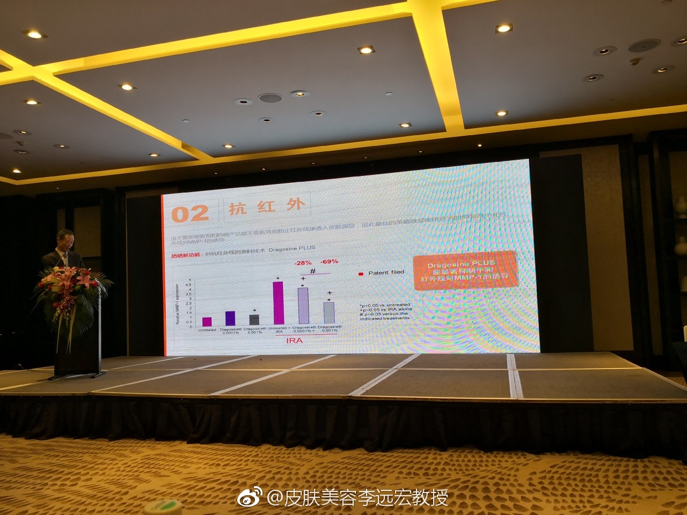
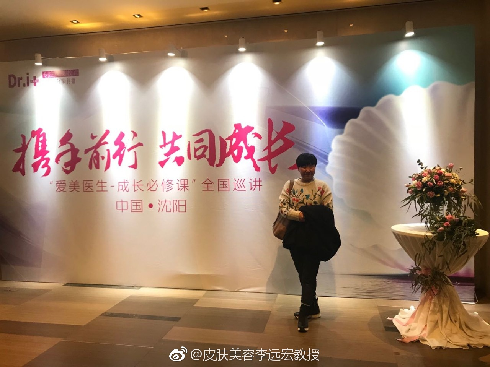

下一场#爱美医生成长必修课#在北京，5月26日。@皮肤美容李远宏教授:感谢各位专家教授的精彩分享，关于医学护肤品研发，活性成分的解读，化妆品黑科技，皮肤，毛发的生理健康，如何实现透皮吸收，新型材料的应用。如果您没来得及参加，可以在一直播中回看。（下载一直播app，或查看微博链接-爱美医生）@爱美医生App @尹锐---皮肤科教授 @百植萃护肤品牌 @可丽金 @Dri爱美圈 @Ada李力 @王玮蓁教授